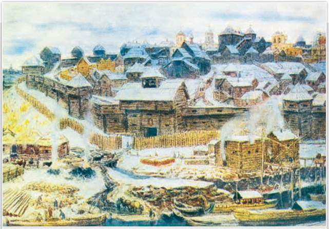
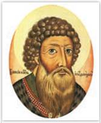
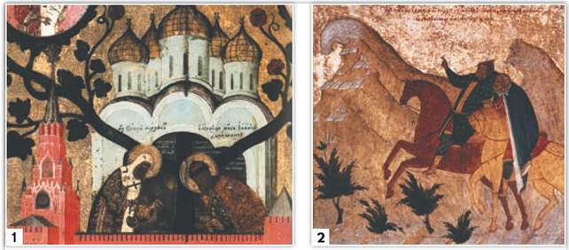

Московский Кремль при Иване Калите. Художник А. Васнецов. 1921 г. Музей Москвы
Художника А. Васнецова современники считали знатоком истории. По его картинам можно проследить, как с течением времени менялся облик Московского Кремля.
РОССИЯ
МИР
1. Московский князь Иван Калита. Князь Иван I (1325—1340) — четвёртый сын Даниила Александровича — был рачительным хозяином, собирателем земель.

Иван Калита
Подробнее. Князь Иван Данилович получил прозвище Калита. По одной из версий, он всегда носил на поясе калиту (денежную сумку, кошель) для раздачи милостыни. По другой версии, прозвище князя связывают с его личными качествами — бережливостью, умением скопить богатства, в том числе для приобретения новых владений. Для дела Иван Калита средств не жалел. Он щедро раздавал вотчины боярам, перешедшим к нему на службу из других земель, жаловал и ордынских мурз, поселившихся в Москве. Знать в Орде была недовольна насилием, с которым хан Узбек насаждал ислам. Обрусевшие православные потомки ордынских мурз вливались в состав старомосковского боярства. Не забывал Иван Данилович посещать Сарай и одаривать подарками хана, царевичей, ханш и вельмож. Ордынцы платили ему благосклонностью.
В конце XIII в. митрополит Максим переехал из разорённого монголами Киева во Владимир. В начале XIV в. большую роль в жизни церкви стал играть митрополит Пётр, который также поселился во Владимире. Князь Михаил Тверской, желавший видеть митрополитом своего сподвижника, встретил Петра враждебно, а вот в Москве новому святителю были рады. Пётр подолгу жил в Москве и встал на её сторону в борьбе с Тверью. К концу своей жизни он окончательно переехал в Москву. Вместе с Иваном Калитой Пётр заложил в Москве каменный Успенский собор, где вскоре и был погребён. Поддержка митрополита Петра во многом обеспечила стремительный рост влияния московских князей. Преемник Петра, митрополит Феогност, уже официально перенёс свою резиденцию в Москву. Это было важно, ведь город, в котором находилась резиденция митрополита, считался столицей. Так Москва стала религиозным центром Северо-Восточной Руси.

1. Митрополит Пётр и князь Иван Калита поливают древо государства Московского. Деталь иконы. XVII в. 2. Князь Иван Калита и митрополит Пётр. Клеймо иконы. XVI в.
Как вы думаете, почему в иконописи сложилась традиция изображать вместе Ивана Калиту и митрополита Петра?
2. Восстание в Твери и переход великого княжения к московским князьям. Ивану Калите представился случай ослабить позиции Твери. В 1327 г. из Орды в Тверь послом прибыл родственник хана Узбека Чолхан с отрядом. В русских источниках он именовался Шевкалом, а в фольклоре — Щелканом. Беззаконные поборы, творимые свитой Шевкала, привели к антиордынскому восстанию в Твери (1327). Почти все ордынцы и сам Шевкал были убиты. Лишь ордынские коноводы, пасшие лошадей за городом, бежали в Москву. Князь Александр Тверской не пытался усмирить восставших.
Тогда разгневанный хан Узбек направил на Русь ордынскую рать, которую сопровождал Иван Калита. Московский князь не желал поставить свои владения под угрозу разгрома монголами. Ведь Русь не имела сил для отпора Золотой Орде, переживавшей эпоху расцвета. Тверское княжество было разорено и уже не обрело прежней силы.
Александр Тверской бежал в Новгород, а затем отправился в Псков. Митрополит Феогност пригрозил псковичам отлучением от церкви за предоставление защиты мятежнику. Пришлось Александру укрыться в Литве. В 1336 г. Узбек вернул повинившемуся Александру тверское княжение. Но уже в 1339 г. хан приказал казнить Александра Тверского в Орде. Историки считают, что события тех лет не обошлись без интриг Ивана Калиты.
Усердие Ивана Калиты было вознаграждено. В 1328 г. ему достались Новгород и Кострома, а суздальскому князю — Владимир и Поволжье. Позже Иван Калита получил ярлык на великое княжение Владимирское и право сбора ордынского выхода на территории Владимирской Руси и Новгорода. Попытки передать сбор дани великому князю делались и ранее, но закрепился такой порядок только в княжение Ивана Калиты.
ТОЧКА ЗРЕНИЯ
Из «Записки о древней и новой России» Н. Карамзина
Сделалось чудо. Городок, едва известный до XIV в., от презрения к его маловажности именуемый селом Кучковым, возвысил главу и спас Отечество. Да будет честь и слава Москве! В её стенах родилась, созрела мысль восстановить единовластие в истерзанной России, и хитрый Иоанн Калита, заслужив имя собирателя земли Русской, есть первоначальник её славного воскресения...
3. «Великая тишина». Иван Калита исправно платил ордынский выход, часто ездил в Орду. Он прикупал земли за пределами Московского княжества. В Орде ему не препятствовали. Так под власть Москвы попали Углич, Галич, Белоозеро. При Иване Калите Московский Кремль расширили и обнесли дубовыми стенами и башнями.
После смерти Ивана Калиты политику сотрудничества с Золотой Ордой продолжили его сыновья — Симеон Гордый (1340—1353) и Иван II Красный (1353—1359). Летописцы писали, что сорок лет, с 1328 по 1367 г., стояла «великая тишина... престаша татарове воевати землю Русскую». Территория Московского княжества выросла. Политическое влияние Москвы усилилось. Но особенно важно то, что за это время появилось новое поколение русских людей: они не видели ужаса ордынских погромов и не боялись монголов.
Подробнее. В XIV в. Русь, как и весь Старый Свет, боялась пришедшего с востока бедствия — эпидемии чумы, прозванной «чёрной смертью». Мор прошёлся по Европе несколько раз и выкосил более трети населения. Переносчиками заразы были крысиные блохи и заболевшие от их укусов животные и люди. На Руси жертвами чумы стали целые города. В Смоленске осталось в живых лишь несколько человек. Киев, Суздаль, Владимир потеряли многих своих жителей. Согласно Никоновской летописи, «бысть мор во Пскове силён зело...». Спасать псковичей прибыл новгородский архиепископ Василий. Он устроил в Пскове крестный ход, но сам вскоре слёг и умер. Тело архиепископа привезли в Новгород и выставили в Софийском соборе. Проститься с владыкой пришли многие новгородцы. Вскоре эпидемия бушевала во всём Новгороде.
ПОДВЕДЁМ ИТОГИ
Политика Ивана Калиты привела к тому, что Москва превратилась в политический центр Северо-Восточной Руси. Московский князь, опираясь на поддержку Орды, получил право сбора ордынского выхода. В Москву была перенесена резиденция митрополита Русской православной церкви.
Вопросы и задания
Работаем с хронологией
Расположите в хронологической последовательности события:
Работаем с источником
Прочитайте отрывок из книги историка Н. Костомарова «Русская история в жизнеописаниях её главнейших деятелей» и ответьте на вопросы.
Восемнадцать лет его правления были эпохою первого прочного усиления Москвы и её возвышения над русскими землями. Главным способом к этому усилению было то, что Иван особенно умел ладить с ханом, часто ездил в Орду, приобрёл особенное расположение и доверие Узбека и оградил свою московскую землю от вторжения татарских послов, которые... ездили по Руси, делали бесчинства и опустошения. В то время, когда другие русские земли поражены были этим несчастием и, кроме того, подвергались другим бедствиям, владения московского князя оставались спокойными, наполнялись жителями и, сравнительно с другими русскими землями, находились в цветущем состоянии.
Работаем с понятиями
Как на Руси называли главу Русской православной церкви?
ДОПОЛНИТЕЛЬНЫЕ МАТЕРИАЛЫ
«УЧИТЕЛЮ И УЧЕНИКУ».
Материалы к параграфу на портале «История.РФ».